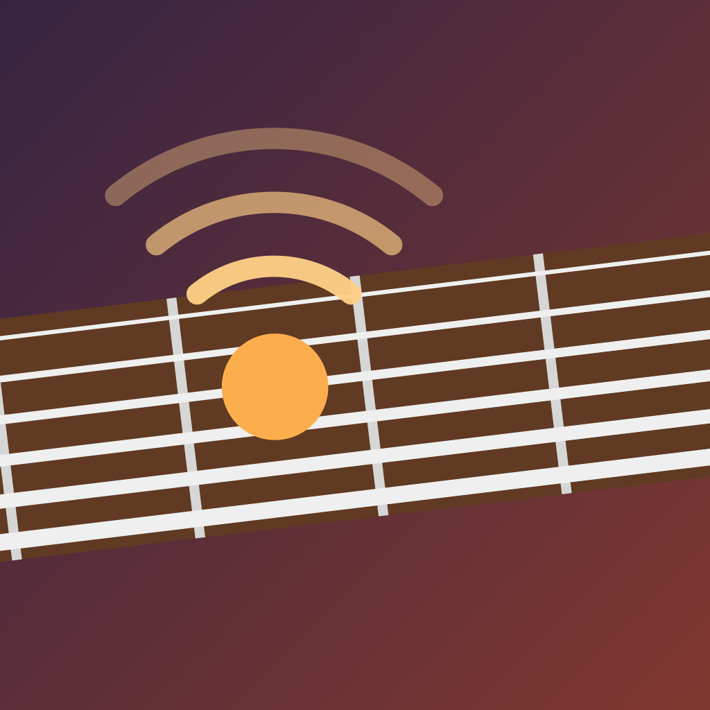

Press kit
About EarFret
EarFret is a fretboard and ear-training app for guitar and bass that you answer by playing your real instrument. It plays a note, an interval or a melody, names a note or asks for a shape, and listens through the microphone, on the device, to tell you right away whether you got it, and if not, how close you were: one fret off, the right note in the wrong octave, or exactly what you played. Spaced repetition brings back the parts of the neck you're slow on, and theory (triads, intervals, scales, arpeggios, CAGED shapes, chord tones over changes) is drawn on your own tuning and checked note by note. It runs on iPhone, iPad, Mac and Apple Watch, collects no data, and has a free tier with an optional EarFret Pro upgrade.
Facts
| App | EarFret |
|---|---|
| Developer | Jeff Hall (independent) |
| Platforms | iPhone and iPad (iOS/iPadOS 17 or later), Mac (macOS 14 or later), Apple Watch companion (watchOS 10 or later), widgets for iPhone, iPad and Mac |
| Languages | English plus 21 others: Chinese (Simplified and Traditional), Czech, Danish, Dutch, Finnish, French, German, Indonesian, Italian, Japanese, Korean, Norwegian, Polish, Portuguese (Brazil), Russian, Spanish, Swedish, Turkish, Ukrainian, Vietnamese |
| Launch | November 17, 2026 on the App Store; public TestFlight beta before then |
| Price model | Free download with free features. EarFret Pro: a yearly subscription with a free trial, or a one-time lifetime purchase. One purchase covers iPhone, iPad and Mac; Family Sharing supported. |
| Privacy | No accounts, analytics, ads or tracking. Microphone audio is analysed on the device and never recorded. Sync uses the player's own private iCloud. |
| Website | earfret.com |
Features
- Answer by playing: every drill can be answered on a real guitar or bass (acoustic or electric), by singing, with a MIDI keyboard or MIDI guitar, or by tapping.
- Near-miss feedback: one fret too high or low, right note in the wrong octave, or the note you actually played.
- Fretboard memorization: find a note on a string, find every position, name the notes along a fret, octave shapes, timed trials, a gated note path with a placement test, and a heat map.
- Spaced repetition per string and note, with a coach that suggests weak or stale topics.
- Ear training: play back notes, intervals and melodies; name intervals, chords, progressions, scales and scale degrees by ear; pitch memory; sing intervals.
- Theory on the neck: triads and inversions, interval shapes, scale explorer, chord library, circle of fifths, and mic-checked scale runs, arpeggios, CAGED shapes and chord tones over progressions.
- Rhythm: tap or play rhythms back, read them, identify tempo, meter and swing.
- Tools: tuner, metronome, drone, backing tracks in six styles, printable fretboard maps (PDF), practice journal and routines.
- Instruments: guitar (6, 7 and 8 strings), 4-, 5- and 6-string bass, ukulele, mandolin, banjo and custom tunings; left-handed neck; staff notation.
- No instrument mode and quick quizzes answered right from a notification.
- Apple Watch: quick quizzes on the wrist (notes on the neck, intervals, notes in chords and keys, plus listen-and-answer ear quizzes: Chord Sounds, Name the Interval, Up or Down?, Which Is Bigger?), 5, 10 or 20 questions, and quick quizzes answered from a notification; answers count toward the streak and reviews on iPhone.
- Hands-free practice: spoken prompts and on-device voice commands.
- Apple platforms: iPhone, iPad, Mac, Apple Watch, widgets, Siri and Shortcuts, Game Center, iCloud sync.
Screenshots, icon and logo


App icon, 1024 × 1024 PNGContact
For press questions, review copies or a TestFlight invite: press@earfret.com.